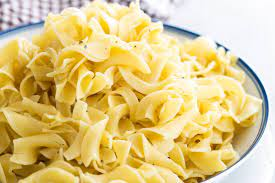

Buttered Noodles

Ingredients
- 1 package fettuccine noodles
- 6 tablespoon butter,cut into pieces
- 1/3 cup grated parmesan cheese
- salt and ground black pepper to taste
Steps
- Fill a large pot with lightly salted water and bring to a rolling boil.
Stir in fettuccine,bring back to a boil,and cook pasta over medium heat until tender
yet firm to the bite,8 to 10 minutes.Drain and return pasta to pot.
- Mix butter,parmesan cheese,salt,and pepper into pasta until evenly combined.
Homepage